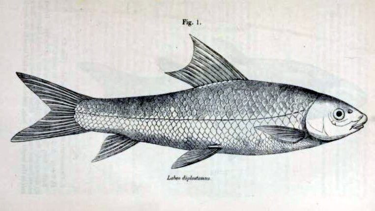

रिवर लाबियो मछलीRiver Labeo
Bangana diplostoma · Cyprinidae · FSH-0070

- Scientific name वैज्ञानिक नाम
- Bangana diplostoma (Heckel, 1838)
- Family कुल
- Cyprinidae
- Hindi हिंदी
- रिवर लाबियो मछली
- Local names स्थानीय नाम
- river labeo, diplostoma, gaddi, mohaylee, river carp
- Status here यहाँ की स्थिति
- native
- Movement आवागमन
- Resident, here all year
- Known from कहाँ दर्ज
- Others have published records from the wider Awadh–Purvanchal plain, none yet from Basti–Ayodhya अवध–पूर्वांचल से दूसरों के प्रकाशित अभिलेख, बस्ती–अयोध्या से अभी नहीं
- IUCN IUCN
- not evaluated
- Review समीक्षा
- not yet reviewed
When to look कब देखें
Present all year. साल भर मौजूद।
Uses and possibilities उपयोग और संभावनाएँ
Drawn from the documented uses in the profile below, where each is labelled traditional, current or a research lead. All uses →
Tell it apart from इनसे अलग पहचानें
रिवर लाबियो मछली / River Labeo
Bangana diplostoma (Heckel, 1838) — Cyprinidae
रिवर लाबियो मछली — उत्तरी भारत की बड़ी मैदानी नदियों और तराई की स्वच्छ धाराओं में पाई जाने वाली एक मध्यम आकार की फुर्तीली और मजबूत देशी माइनर कार्प है। इसका शरीर सुडौल, लंबा और स्लेटी-हरे रंग का होता है, जिसके पार्श्व चमकदार चांदी जैसे दिखते हैं। इसका मुंह नीचे की ओर होता है और इसका निचला होंठ बहुत मोटा तथा दोहरा मुड़ा हुआ होता है, जिस पर पत्थरों से काई खुरचने के लिए एक सख्त सींग जैसी परत होती है। इसकी थूथन पर एक हल्का आड़ा गड्ढा होता है और ऊपरी जबड़े पर केवल दो बहुत छोटी मूंछें होती हैं। यह नदी की तलहटी में पत्थरों और बजरी पर जमी काई को खुरचकर अपना पोषण प्राप्त करती है। ग्रामीण बाजारों में यह एक स्वादिष्ट और सस्ती खाद्य मछली मानी जाती है।
Quick Identification त्वरित पहचान
| Feature | Description |
|---|---|
| Size | Medium-sized cyprinid; reaches about 17.2 cm TL (Froese & Pauly 2025) |
| Body Shape | Elongate, subcylindrical anteriorly, moderately compressed posteriorly (Heckel 1838) |
| Mouth & Snout | Snout prominent with a moderate transverse groove; mouth inferior, transverse (Talwar & Jhingran 1991) |
| Lips & Barbels | Lower lip thick and folded with a horny layer; single pair of minute maxillary barbels (Talwar & Jhingran 1991) |
| Colour | Greyish-green dorsally, silvery on flanks, white beneath; fins tinged with dusky grey (Talwar & Jhingran 1991) |
| Dorsal Fin | Moderate base, containing 2–3 unbranched and 9–10 branched rays, lacking a spine (Heckel 1838) |
| Scales | Moderate cycloid scales; 41 to 43 scales along complete lateral line (Talwar & Jhingran 1991) |
Field tip: Look along flowing river glides and sandy-gravel channels. An elongate, silvery-green carp with a moderate transverse snout groove, an inferior mouth with a deeply folded, horny-rimmed lower lip, and 41–43 lateral line scales, is Bangana diplostoma.
हिंदी: यह स्लेटी-हरे रंग की सुडौल मछली है जिसका मुंह नीचे की ओर होता है। इसका निचला होंठ बहुत मोटा और दोहरा मुड़ा हुआ होता है, जिसके किनारे सख्त होते हैं। ऊपरी जबड़े पर केवल एक जोड़ी बहुत बारीक मूंछें होती हैं।
Morphology आकारिकी
Size as given by FishBase (Froese & Pauly 2025):
| Measurement | Range | Notes |
|---|---|---|
| Maximum length | 17.2 cm TL | Froese & Pauly (2025), FishBase |
| Lateral line scales | 41–43 | Complete lateral line series |
| Dorsal fin rays | iii, 9–10 | Dorsal fin without a serrated spine (Heckel 1838) |
| Anal fin rays | ii, 5 | Standard configuration in Labeoninae (Talwar & Jhingran 1991) |
| Pectoral fin rays | i, 15–16 | Pectoral fins well developed for bottom-holding (Talwar & Jhingran 1991) |
| Pelvic fin rays | i, 8 | Abdominal insertion (Talwar & Jhingran 1991) |
The body is elongate, slender, and subcylindrical anteriorly, tapering smoothly toward the caudal peduncle (Heckel 1838). The head is relatively small and blunt. The snout projects distinctly beyond the mouth and features a moderate transverse groove, although this groove is typically shallower than that seen in Bangana dero (Talwar & Jhingran 1991). The mouth is inferior and transverse. Both lips are fleshy; the lower lip is deeply folded, forming a prominent transverse labial ridge with a deciduous horny cartilaginous sheath used for scraping epilithic biofilms off stones and gravel. A single pair of minute maxillary barbels remains concealed within the labial furrow.
Live coloration is slate grey to olive-green on the back, brightening to shining yellowish-silver on the lateral flanks and silvery-white on the belly (Talwar & Jhingran 1991). In mature specimens, individual scales on the upper flank may display faint dark crescentic borders. The dorsal and caudal fins are dusky grey, whereas the pectoral, pelvic, and anal fins are pale yellowish-white (Heckel 1838).
हिंदी: शरीर लंबा और छरहरा होता है। थूथन आगे की ओर निकली होती है जिस पर एक हल्का आड़ा गड्ढा होता है। निचला होंठ मोटा और मुड़ा हुआ होता है जिस पर सख्त परत होती है जो काई खुरचने का काम करती है। रंग पीठ पर स्लेटी-हरा और पेट की तरफ सफेद होता है।
Behaviour & Ecology व्यवहार और पारिस्थितिकी
The River Labeo is a rheophilic benthic species adapted to flowing alluvial rivers and perennial river networks (Talwar & Jhingran 1991). It primarily inhabits open river channels, glides, deep scours, and gravel shoals where sustained water flow maintains good aeration and clean substrates.
Adults move in small schools close to the riverbed. With their specialized ventral mouth and horny lower lip, they scrape biofilms, encrusting diatoms, and filamentous algae from submerged rocks, gravel, and submerged timber (Talwar & Jhingran 1991). During the high-water monsoon season, they venture into seasonal side streams and connected floodplain depressions, retreating to main river deeps as water levels decline during autumn and winter. They avoid stagnant, deoxygenated backwaters and are sensitive to heavy siltation and organic pollution.
हिंदी: यह नदी की तलहटी में बहते हुए पानी के बीच रहना पसंद करती है। यह पत्थरों और लकड़ी के लट्ठों पर जमी काई को खुरचकर खाती है। मॉनसून के दिनों में यह नए जलभराव वाले किनारों में जाती है और सूखा पड़ने पर मुख्य नदी के गहरे कुंडों में वापस आ जाती है।
Life Cycle / Phenology जीवन चक्र
Seasonal phenology in northern Indian river systems across the agricultural year (Talwar & Jhingran 1991):
| Season / Month | Stage | Field Observation |
|---|---|---|
| June–July (Monsoon onset) | Upstream spawning run | Adults migrate toward swift shallows and side tributaries (Talwar & Jhingran 1991) |
| July–August (Kharif peak) | Spawning & breeding | Spawning occurs in flowing shallows over gravel beds |
| September–November (Post-monsoon) | Juvenile recruitment | Fingerlings forage on benthic diatoms along shallow river glides (Talwar & Jhingran 1991) |
| December–February (Rabi winter) | Deep pool retreat | Sub-adults and adults shelter in deep river scours and perennial pools |
| March–May (Summer / Zaid) | Active benthic feeding | Heavy grazing on algal mats as water temperatures rise |
Breeding takes place during the monsoon months from June through August (Talwar & Jhingran 1991). High discharge rates, lowered water conductivity, and turbid floodwaters stimulate the fish to migrate upstream into flowing gravel shallows. Females release hundreds of demersal eggs that settle into interstitial spaces among clean sand and stones. The eggs hatch after a few days, and free-swimming fry gather in sheltered marginal eddies before moving out to join feeding schools in main channels.
हिंदी: प्रजनन वर्षा ऋतु (जून से अगस्त) के दौरान होता है जब नदियां उफान पर होती हैं। मछलियां उथले किनारों और कंकड़-पत्थर वाली धाराओं में जाकर अंडे देती हैं। अंडों से कुछ ही दिनों में बच्चे बाहर आ जाते हैं और उथले पानी में काई खाकर बढ़ते हैं।
Diet and Feeding Behaviour आहार
Bangana diplostoma is primarily a benthic herbivore and periphyton grazer (Talwar & Jhingran 1991):
Natural diet components:
- Filamentous green algae, blue-green algae, and unicellular diatoms scraped from rocks and gravel.
- Decaying aquatic plant fragments and soft organic detritus ingested from bottom sediments (Talwar & Jhingran 1991).
- Benthic micro-invertebrates, including chironomid midge larvae and tiny worms living among algal crusts.
- Microscopic protozoans and rotifers filtered during post-larval stages.
हिंदी: यह शाकाहारी मछली है। यह नदी की तलहटी में पत्थरों और बजरी पर जमी हरी काई, शैवाल, सूक्ष्म डायटम और जैविक कचरे को खुरचकर अपना पेट भरती है।
Predators / Natural Enemies शत्रु
Documented natural predators in northern Indian river networks:
- Large predatory fishes: Major riverine predators like Wallago attu (Striped Catfish), Bagarius bagarius (Goonch), and Chitala chitala (Clown Knifefish) prey on adults and sub-adults.
- Piscivorous birds: Storks, grey herons, and cormorants hunt along shallow gravel bars and riffles.
- River otters and turtles: Smooth-coated otters and freshwater softshell turtles hunt river labeos in deep river pools.
- Water snakes: Prey on juveniles sheltering in marginal vegetated shallows.
हिंदी: बोआल, गूंज, चीतल, बगुले, जलकौवे और उदबिलाव इस मछली का शिकार करते हैं।
Agricultural / Human Relevance कृषि प्रासंगिकता
Nutritional and commercial food value: The River Labeo is an important food fish across northern and eastern India. Captured by commercial and artisanal fishers using cast nets, gill nets, and traps in large river basins like the Ghaghara, Kuwano, and Rapti, it is widely esteemed for its firm, sweet flesh. It provides essential protein, iron, and omega-3 fatty acids to riparian communities at an affordable price.
Sandbed ecosystem function: By actively scraping and ingesting periphyton and organic silt from river substrates, Bangana diplostoma helps maintain clean, well-oxygenated gravel beds in flowing river systems (Talwar & Jhingran 1991).
Traditional: A traditional staple food fish widely eaten across Awadh and eastern Uttar Pradesh.
Today: Sold fresh in village markets (haats) and urban fish bazaars as an affordable minor carp.
Research direction (a lead, not a result): Assessing artificial breeding techniques for Bangana diplostoma to introduce it into hill-stream and plains polyculture systems.
हिंदी: यह नदी किनारे रहने वाले समुदायों के लिए एक बहुत स्वादिष्ट और पौष्टिक देशी मछली है। यह पत्थरों की काई खाकर नदी की तलहटी को स्वच्छ बनाए रखती है और ग्रामीण बाजारों में अच्छी कीमत पर बिकती है।
Expected Locally स्थानीय रूप से अपेक्षित
Not a field record. Written from published accounts for eastern Uttar Pradesh. No confirmed local sighting yet — if you have seen it, that is what the atlas needs.
अभी तक स्थानीय पुष्टि नहीं। यह विवरण प्रकाशित स्रोतों से है, किसी अवलोकन से नहीं।
The River Labeo is expected across eastern Uttar Pradesh in perennial rivers, large flowing streams, oxbow lakes (tals), and major canal systems. Look in river pools and flowing glides from August through January. GBIF holds published records from the wider Awadh–Purvanchal plain, none yet from Basti–Ayodhya. A voucher photograph showing the elongate body, moderate transverse snout groove, folded lower lip with horny ridge, and 41–43 lateral line scales, submitted via the About page, would confirm the first local documentation for the project area.
Distribution वितरण
Global range: Widespread across South Asia, occurring natively in India, Pakistan, Nepal, and Bangladesh (Talwar & Jhingran 1991).
In India: Distributed throughout the Indus and Ganges river drainages, from Kashmir and Punjab across Uttar Pradesh and Bihar (Menon 1999).
In Uttar Pradesh: Recorded throughout the Ganges, Ghaghara, Gandak, and Rapti river networks and connected canals.
In Basti district / eastern UP: Expected as a resident native species in the Ghaghara and Kuwano river basins and associated perennial waters.
हिंदी: यह भारत, पाकिस्तान और नेपाल की नदी घाटियों में पाई जाती है। उत्तर प्रदेश में यह घाघरा, गंडक और राप्ती नदियों के मुख्य प्रवाह में सामान्य रूप से मिलती है।
Research Questions शोध प्रश्न
- How do seasonal flow modifications downstream of irrigation barrages affect the spawning migration of Bangana diplostoma in the Ghaghara basin? / बैराज से पानी का बहाव बदलने पर इस मछली के प्रजनन पर क्या प्रभाव पड़ता है?
- What micro-habitat factors allow Bangana diplostoma and Bangana dero to partition benthic grazing resources in shared river stretches?
- How do the growth rates and morphology of Bangana diplostoma in plains rivers compare with high-altitude populations described from Kashmir? / क्या मैदानी नदियों की यह मछली पहाड़ी इलाकों की मछली से शारीरिक रूप से भिन्न है?
- What specific hydrological cues in monsoon discharge trigger the upstream migration of adult brooders?
- What are the thermal and dissolved oxygen tolerances of Bangana diplostoma during pre-monsoon low-flow conditions?
Similar Species मिलती-जुलती प्रजातियाँ
| Species | Key Differences | |
|---|---|---|
| Bangana diplostoma (River Labeo) | Moderate snout groove; thick folded lower lip with horny ridge; 41–43 lateral line scales (Talwar & Jhingran 1991) | |
| Bangana dero ([[dero_barb\ | Dero Barb]]) | Snout with deep transverse groove studded with nuptial tubercles; 40–44 lateral line scales (Talwar & Jhingran 1991) |
| Labeo boga ([[boga_labeo\ | Boga Labeo]]) | Lacks transverse groove on snout; 37–39 lateral line scales; distinct shoulder blotch present (Talwar & Jhingran 1991) |
| Labeo rohita (Rohu) | Much larger in size; snout lacks transverse groove; lips distinctly fringed without horny ridge; 40–44 scales |
Field rule: An elongate, silvery-green carp with a moderate transverse groove on the snout, an inferior mouth with a thick folded lower lip bearing a horny ridge, and 41–43 lateral line scales, is Bangana diplostoma.
हिंदी: रोहू बहुत बड़ी होती है और बोगा लाबियो में थूथन पर गड्ढा नहीं होता, जबकि रिवर लाबियो में थूथन पर हल्का गड्ढा और नीचे मुड़ा हुआ मोटा होंठ होता है।
Taxonomy & Classification वर्गीकरण
Original description. Described by Johann Jacob Heckel in 1838 as Varicorhinus diplostomus in Fische aus Caschmir, page 67, plate 11. Type locality: Kashmir, India.
Subspecies. Monotypic — no subspecies are recognized across its continental range.
Family and order placement. Order Cypriniformes, family Cyprinidae, subfamily Labeoninae. The genus Bangana Hamilton, 1822, comprises specialized rheophilic grazing carps with horny lower jaws.
Phylogenetic notes. Formerly grouped within Labeo, recent morphological and molecular evaluations place this species within Bangana due to its labial fold architecture and horny jaw sheath (Talwar & Jhingran 1991).
IUCN status rationale. Not evaluated (NE) on the global IUCN Red List of Threatened Species. It maintains widespread, abundant populations across South Asian river systems.
हिंदी: इसका वैज्ञानिक नाम Bangana diplostoma है और यह Cyprinidae परिवार की Labeoninae उपपरिवार की सदस्य है।
Photo Gallery फोटो गैलरी
No photos yet — add field photos to media/species/river_labeo/ and run node scripts/sync_photos.js.
Photos needed आवश्यक फोटो
- [ ] Lateral view of adult specimen showing silvery-green body and fins (शरीर और पंखों की पूरी तस्वीर)
- [ ] Close-up of head showing snout groove and nostrils (थूथन और नथुनों का स्पष्ट दृश्य)
- [ ] Underside of head showing inferior mouth and folded lower lip (मुंह और निचले मुड़े हुए होंठ का दृश्य)
- [ ] Live specimen in a river gravel pool (नदी के स्वच्छ पानी में तैरती मछली)
References संदर्भ
- Heckel, J. J. (1838). Fische aus Caschmir. Hallberger'sche Verlagshandlung, Stuttgart, p. 67.
- Talwar, P. K. & Jhingran, A. G. (1991). Inland Fishes of India and Adjacent Territories, Vol. 1. Oxford & IBH Publishing Co., New Delhi, pp. 206–207.
- Menon, A. G. K. (1999). Check list - fresh water fishes of India. Records of the Zoological Survey of India, Occasional Paper No. 175, p. 116.
- Jayaram, K. C. (2010). The Freshwater Fishes of the Indian Region, 2nd edition. Narendra Publishing House, Delhi.
- Froese, R. & Pauly, D. (Eds.) (2025). FishBase. World Wide Web electronic publication.
- GBIF Occurrence Data — Bangana diplostoma, India (2025).
Source file: species/fauna/fish/river_labeo.md